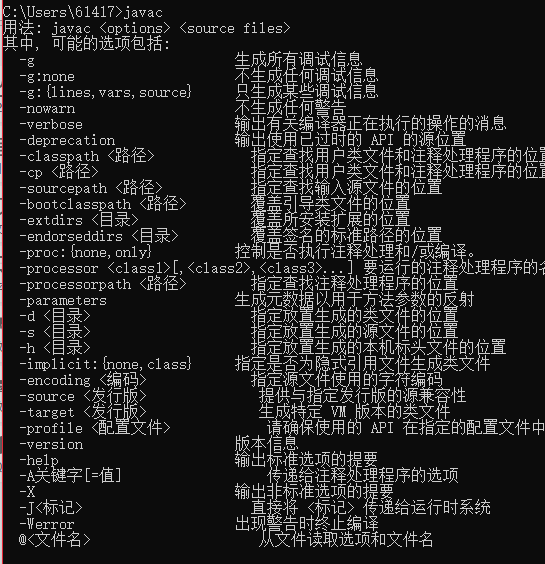
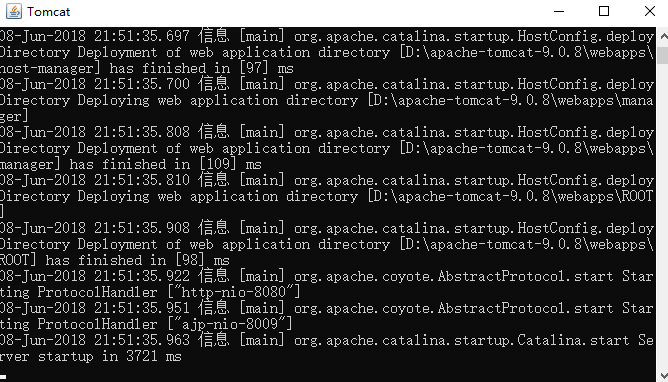

Toggle navigation
夏睡醒了秋
首页
留言
后知后觉
Home
位置：
xsxlq
>
后知后觉
> 网站搭建
本站搭建过程
xsxlq
(2018-06-07)
1.Tomcat服务器
一.以windows为例：下载对应版本的JDK,并配置环境变量
1.下载地址：
http://www.oracle.com/technetwork/java/javase/downloads/jdk8-downloads-2133151.html
2.配置环境变量。
3.检验配置结果，cmd中键入javac，其运行结果参考：

二.下载Tomcat
1.下载地址：
http://tomcat.apache.org/
2.安装完成后，可以运行bin目录的startup.bat文件启动。运行结果参考：。

3.浏览器验证配置结果：运行 http://localhost:8080 显示tomcat页面为配置成功
Tomcat服务器配置完成，
如果所配置主机可以联网的话，那么其他机器将可以通过 该主机 IP：8080访问该主机对应页面。
到此，一个简单的前端网页配置已经完成，可以将自己的网页项目放到Tomcat 对应文件夹下（例如ROOT），别人就可以通过IP+端口+路径 访问。
后续步骤是为了让网页可以合法上架（备案），便捷访问（域名解析）...等
2.云服务器
3.域名
4.备案
待更新...